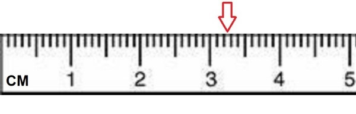

Press Ctrl-Z to toggle the answers.
Worksheet
name: ______________________________________
1) Subtract the following numbers and indicate the correct number of significant figures.
1255.7 - 395.19
A) 496200 (4 sf)
B) 4.9624x105
C) 500000 (2 sf)*
D) 496000 (3 sf)
2) Determine the volume of an item that has a mass of 416.8 mg and a density of 13.5 mg/cm3.
A) 5630 cm3
B) 0.0324 cm3
C) 30.9 cm3*
D) 403 cm3
3) Divide the following numbers and indicate the answer with correct number of significant figures.
\( \frac{262.4}{7.34} \)
A) 36
B) 35.75
C) 1930
D) 35.7
4) An experiment to determine the density of a glucose solution garners the following results: 1.14 g/mL, 1.12 g/mL, 1.11 g/mL, 1.13 g/mL. If the known value for the density of the glucose solution is 0.581 g/mL, which statement below best describes her results?
A) The results are neither accurate nor precise.*
B) The results are precise but not accurate..
C) The results are accurate but not precise.
D) The results are accurate and precise.
6) Which of the following is an accurate description of random error?
A) Error where it is impossible to determine the source
B) Error that is always in the same direction
C) Error that has equal probability of being too high or too low*
D) Error that tends to be too high or tends to be too low
7) Read the water level (shown in mL) with the correct number of significant figures.

A) 2.7 mL
B) 2.75 mL
C) 2.6 mL
D) 2.65 mL*
8) Which of the following is an exact number?
A) 6 women*
B) 5.41 cm3
C) 240 mL alcohol
D) 6 mg magnesium chloride
9) Multiply the following numbers and indicate the answer with correct number of significant figures.
488.92 x 2.9
A) 1417.9
B) 1420
C) 1418
D) 1400 (2 sf)*